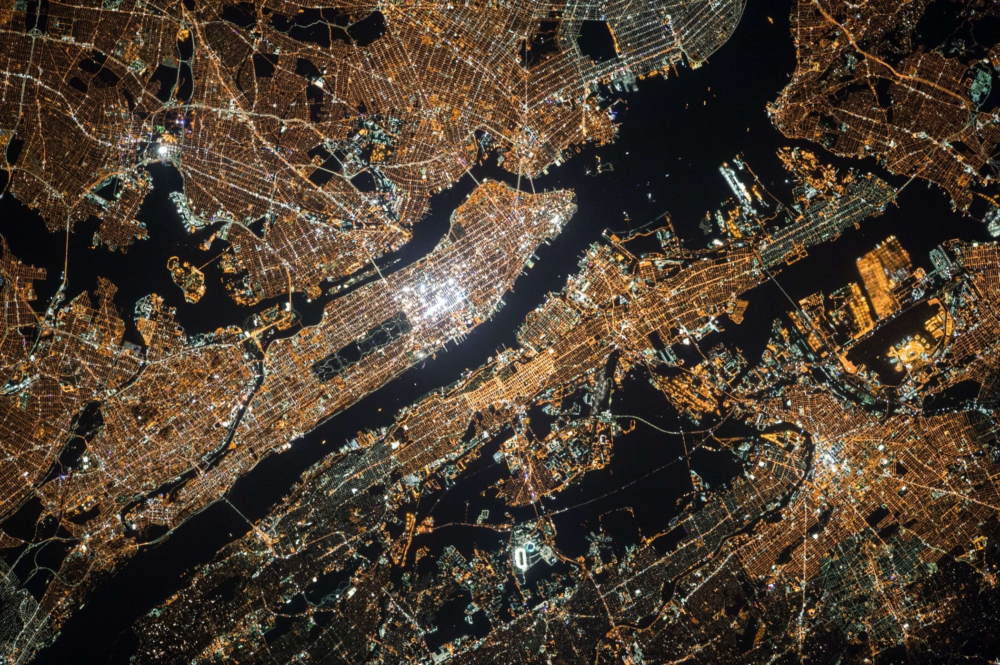
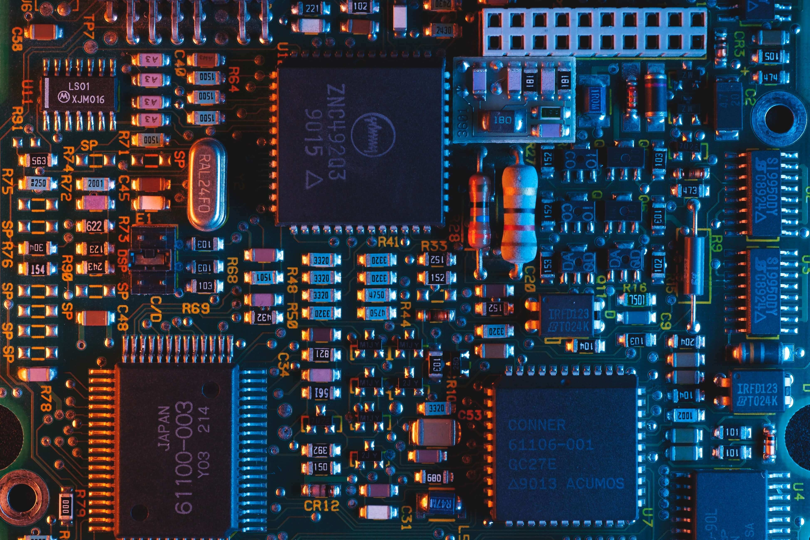

Imagine that you are part of a group of experts in computer technology that have been given
the task of exploring
what the potential impact of satellite internet technology might have on society. Your discussions can
include its
effects on national security, privacy, and everyday life. You could also discuss how the internet compares
to other
critical infrastructure like the electrical power grid, the sewage system or public roads. Include external
sources
when necessary. How is the internet connected to other infrastructures?
DATA1100 Obligatory Assignment Groups 45 - 14/09/2023, 12:03
Today the global infrastructure of the internet is, to a large degree, dependent on physical sub-sea and
underground cables.
Despite the global nature of the internet, the very fact that it relies on physical cables makes its flow of
information
sometimes subject to national borders. One recent example of this is the new
Norwegian E-Law (2020),
which propose that the intelligence service can monitor and collect all data that goes across the national
border.
As society becomes increasingly digitalized, internet cables can also be seen as critical infrastructure.
Internet cables, both in the North-Sea and of the coast of Taiwan is suspected to have been deliberately
sabotaged.
An estimated 2,5 billion people in the world do not yet have access to the internet. To overcome the physical
limitations of internet cables, companies like Starlink and the EU are working on providing internet access
through satellites. Elon Musk’s Starlink
is today the largest global provider of satellite internet with over
4,500 satellites in orbit. They expect to have 42,000 new ones in orbit in the coming years.
Key terms:
Technological trajectory – the evolution of technology in a specific field.
Co-production – when experts from different fields work together to produce new technologies.
Critical infrastructure - systems that provide functions necessary for life.
Identify the Situation:
My future job is likely to be heavily influenced by the internet. Considering that important information can
be
stolen online, one must be cautious. However, it’s also great that those parts of the world without internet
access are also going to get connected, so we can send crucial messages everywhere in the world.
And through the internet, every country will have the opportunity to develop both technologically
and economically.

NASA, New York
Describe your immediate reactions:
Satellites have made it easier to communicate across geographical boundaries.
Education has been made easier thanks to satellite technology and so more people are able to get an
education than before.
They have also made it easy to establish communication links with remote and isolated regions all over
the world.
Satellites allow for real time transmission of events so that people can witness world events as they
are happening.
Satellites, however, cause pollution by contributing to space debris, and these debris can be dangerous
if they end up colliding with other satellites.
Domenico Loia, Unsplash
Describe three potentially positive aspects of this development:
Satellite internet is now globally spread and gives us good access to others very quickly. It has become so
widespread
that it doesn't matter where you are in the world, even the least developed countries have access to it. We
get most
of our information and research form satellite internet, such as information from other countries that might
have
problems or are in wars. This gives us the opportunity to help others. This helps us to get further with our
research
and discover more. It´s also relatively cheap which makes it even more accessible for everyone.
Describe three potentially negative aspects of this development:
There are negative consequences of this technology. Such technology can invade the private lives of others.
Information sent over the internet can be stolen and end up in the wrong hands. The expansion of the
internet
is harmful to the environment as well. Mostly servers must run 24/7 consuming a lot of energy. Technology is
advancing fast, and we need new devices. This is also contributing to more electronic waste. The production
of these devices isn’t so environmentally friendly. And the internet also leads to the spreading of false
information.

Umberto, Unsplash
Identify potential consequences:
The potential consequences that will derive from satellite technology Internet could be both positive and
negative.
Satellite technology would foremost be a huge benefit for those who live in poor or underserved areas, that
don’t have
access to the infrastructure needed for high-speed internet connection. Economically, global
internet satellites would drive economic growth and increase opportunities in new areas who have not had
prior access
to this kind of technology. It would also lead to more competition in the market, reducing costs, but with a
wide-scale
implementation of satellite technology, we could potentially see the loss of traditional ISPs that would be
replaced
with the new technology, which would lead to job losses. Some are also sceptic to this technology, because
of the
privacy concerns that the government can use satellite data to monitor over unaware citizens without their
consent.
Some unintended consequences can be the space waste and radiation these satellites can emit.